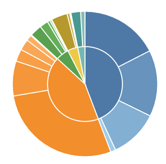
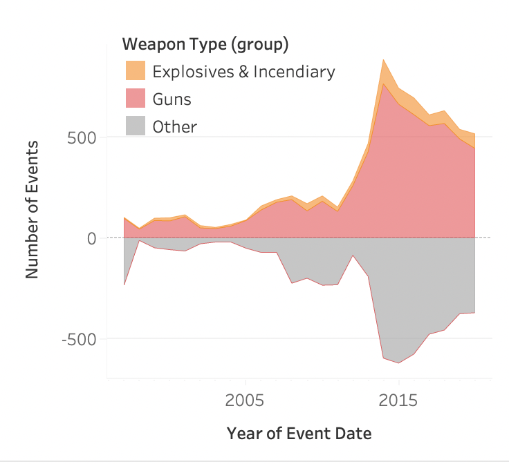
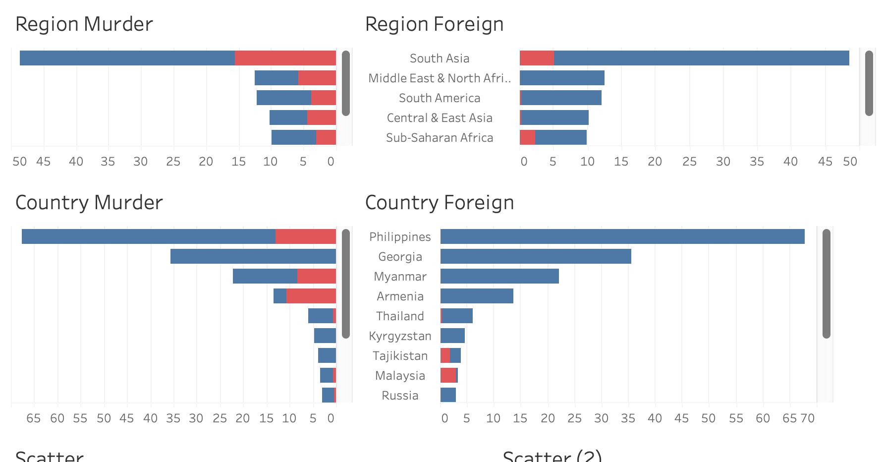
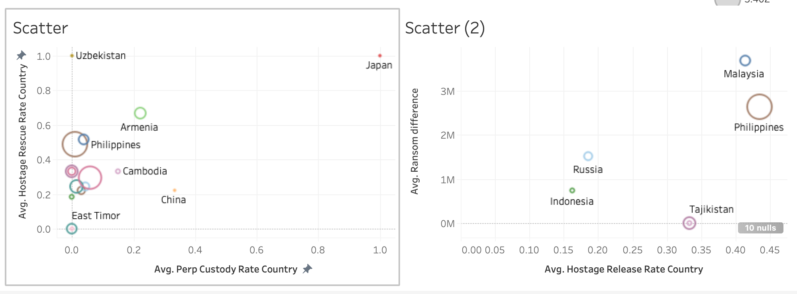

World Map
 The world map shows the number of events across the different countries. The user can click any
country and adjust both the sunburst Stream chart to the selected countries.
The world map shows the number of events across the different countries. The user can click any
country and adjust both the sunburst Stream chart to the selected countries.
Project 2
The world map shows the number of events across the different countries. The user can click any
country and adjust both the sunburst Stream chart to the selected countries.
 The sunburst shows the distribution among the different target types with the following main categories: Military/Police/Government, Civilians, Infrastructure, Terrorists, and Other. Each of them shows the distribution of different subtypes at the outer ring of the Sunburst.
 The stream chart shows the use of several types of weapons used over time categorized in three groups: Explosives& Incendiary, Guns, and others. The first two categories are shown on the positive y-Axis while ‘Other’ is shown on the negative y-Axis. The chart can be read similarly to a stacked bar chart where ‘Explosives& Incendiary’ is stacked on top of ‘Guns.’ The user can browse over the chart to get more information about the different datapoints. The user can also click one of the weapon types to adjust the other two charts by weapon type as well.
 There are two butterfly plots on for the different regions and then one for the top 5 countries. The butterfly plot shows the proportion between foreign terrorists(red) and homegrown terrorist (blue). On the left perps participating in murder... MUSST DU NOCH MACHEN
 There are two scatterplots. The right scatterplot shows the relationship between average hostages released by country and the average ransom difference (Demanded vs paid). The size of the datapoint indicates the number of events per million citizens. The left scatterplot shows the relationship between the average perp taken in custody by country versus average hostage rescue rate by country. The size of the datapoint is to read as in the first scatterplot.